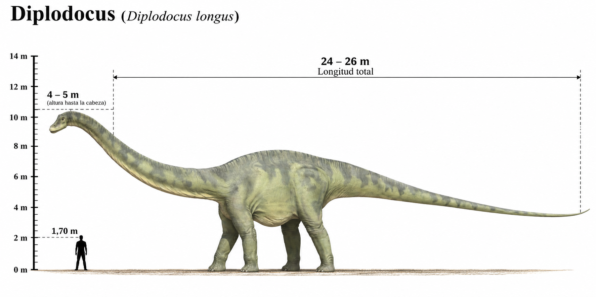

Diplodocus carnegii

El Diplodocus carnegii fue un enorme dinosaurio saurópodo herbívoro que habitó América del Norte durante el Jurásico tardío, hace aproximadamente entre 154 y 152 millones de años. Sus restos fósiles fueron descubiertos en la formación Morrison, una de las regiones paleontológicas más importantes del mundo. Su nombre significa "doble viga", en referencia a unas estructuras óseas situadas en las vértebras de la cola. Se caracterizaba por su cuerpo alargado, cuello muy largo, cabeza pequeña y una extraordinaria cola que terminaba en una estructura delgada semejante a un látigo. A diferencia de otros saurópodos, como Brachiosaurus, sus extremidades delanteras eran ligeramente más cortas que las traseras, por lo que su espalda presentaba una disposición relativamente horizontal. Poseía dientes estrechos y alargados, situados principalmente en la parte delantera de las mandíbulas. Estos dientes estaban adaptados para arrancar vegetación, que posteriormente era procesada mediante su sistema digestivo, sin necesidad de una masticación intensa. Su largo cuello le permitía alcanzar vegetación situada a diferentes distancias sin tener que desplazar continuamente su enorme cuerpo. Compartió su ecosistema con otros grandes saurópodos, como Apatosaurus y Brachiosaurus, además de dinosaurios herbívoros como Stegosaurus y depredadores como Allosaurus. Fue uno de los dinosaurios más largos de su época, aunque su constitución relativamente esbelta hacía que pesara menos que otros saurópodos de dimensiones semejantes.
- Grupo: Saurópodo.
- Familia: Diplodocidae (diplodócidos).
- Período: Jurásico tardío (hace aproximadamente 154–152 millones de años).
- Alimentación: Herbívoro.
- Longitud: Aproximadamente 24–26 metros.
- Altura: Aproximadamente 4 metros hasta los hombros.
- Peso: Aproximadamente 12–16 toneladas.
- Localización: América del Norte (actual Estados Unidos).
